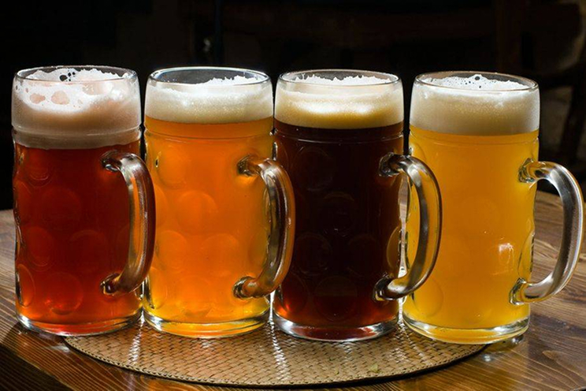

Факти
1. У Єгипті пиво було замість води.За часів кам’яного віку в Єгипті існувала глобальна проблема — сильне забруднення Нілу. Вода з річки не була придатною для вживання, тому жителі замість води вживали пиво. Їм вгамовували спрагу навіть робітники, які зводили піраміди. На одну людину видавалося три склянки на день. Також вважалося, що пінне підвищує витривалість та працездатність. 2. Першими пивоварами були жінки.Від виникнення пінного напою до кінця восьмого століття пивоваріння було жіночим заняттям. Більше того, до роботи допускалися лише гарні жінки. І це стосувалося всіх 
країн, де варилося пиво. Навіть покровительками напою були богині: у Південній Месопотамії (нині Ірак) була богиня Нінкасі, а Єгипті — Менкет. 3. Найнезвичайніше пиво Гіннес (Guinness) є еталоном
темного пива і має оригінальний смак. Його головна унікальність – бульбашки не піднімаються, а залишаються на дні келиха. Причина в газі, в даному сорті пива, він не з вуглекислого газу, як у всіх, а з азоту. До речі, азот гірше розчиняється у воді. Але його використовують, щоб світлі бульбашки були помітні у темному пиві. Є певні правила, як потрібно розливати в келихи даний сорт, для цього необхідно мати спеціальну майстерність.